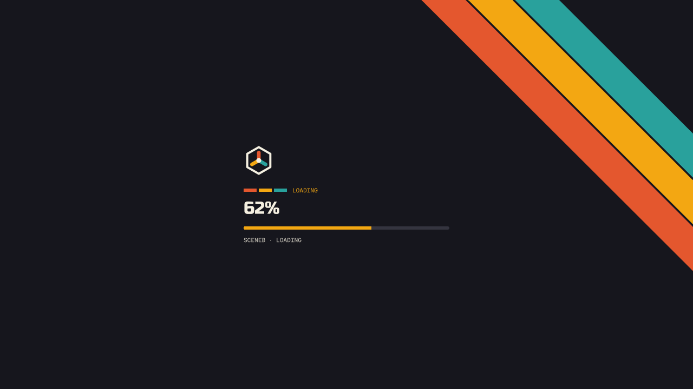
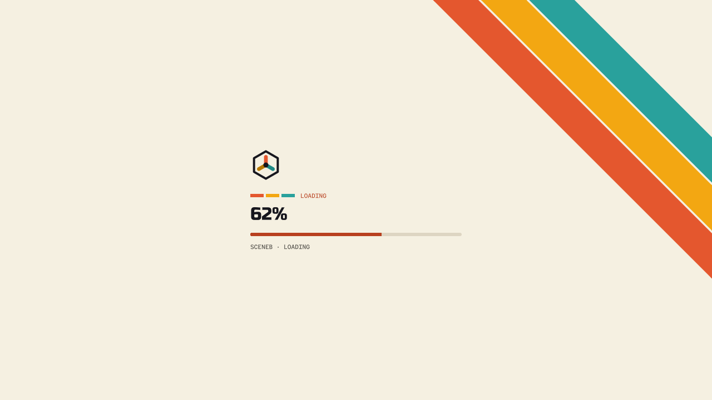
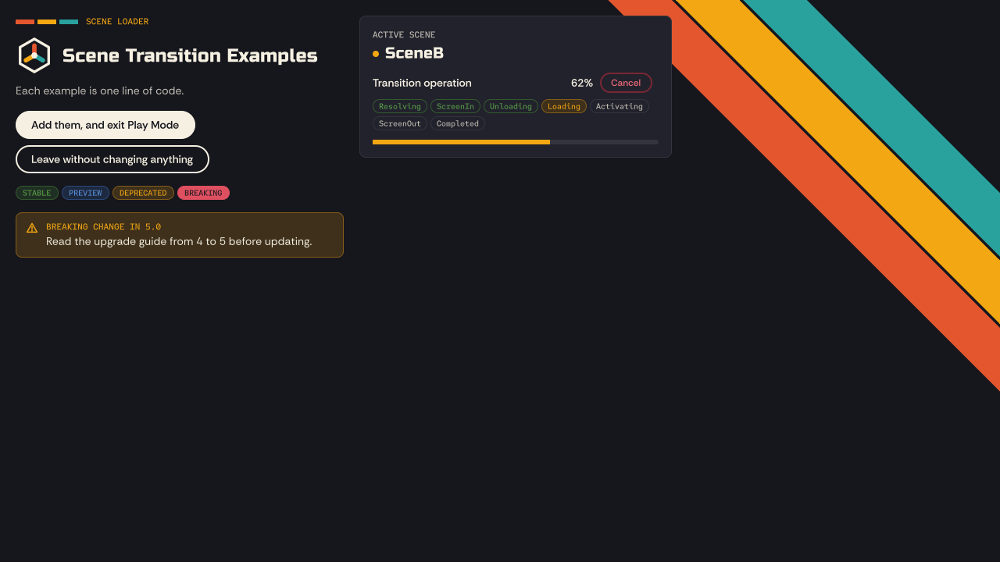
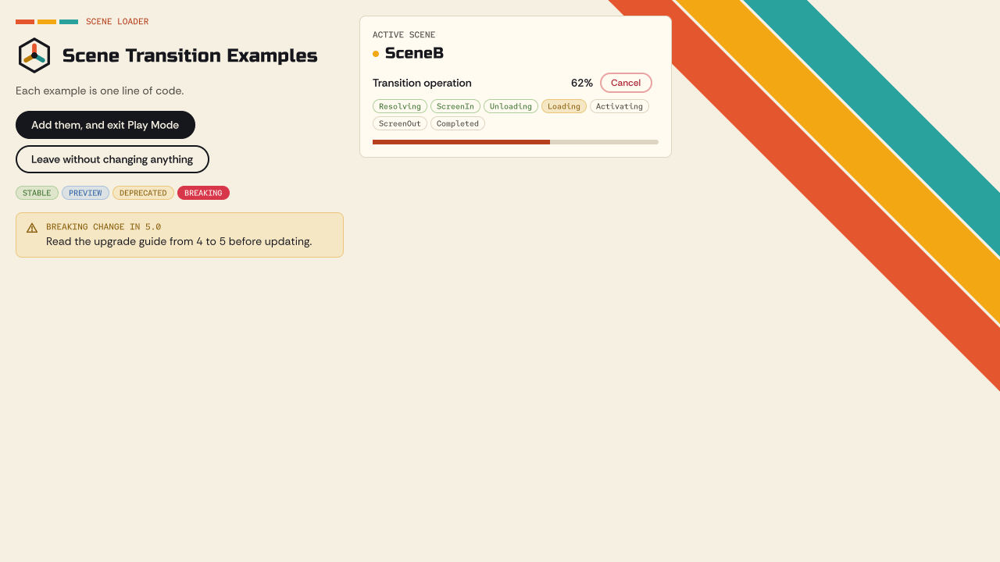

My Gamedev Tools
The shared look for every My Gamedev Tools package: docs sites, store pages, and the runtime UI in package samples. Everything here is built from the tokens in tokens/.
Decisions
- Mark
- H1: hexagon frame with three rounded axes, a 3D-vector gizmo. One mark for every package.
- Theme
- Cartridge: cream and ink, with tomato, amber and teal stripes. Light and dark.
- Type
- C4: Russo One for display, Rethink Sans for text, Red Hat Mono for code and labels.
- Store
- Ink cards with diagonal corner stripes that bleed off the top and right edges.
- Unity
- Editor windows keep Unity's standard look. The brand is for runtime UI in samples: loading screens, HUDs, menus.
- Status
- Green, cobalt and cherry for success, info and error; amber doubles as warning. Shape-coded icons.
- Docs
- Docusaurus, through
@mygamedevtools/docusaurus-theme.
Logo
Color
Palette
Semantic roles
Use these in components. They switch between light and dark; the palette doesn't.
| Token | Light | Dark | Use |
|---|
Type
Components
Scene transitions, in one line.
Load, unload and transition Unity scenes in one line. Read the docs.
MySceneManager.TransitionAsync("target", "loading"); // one lineStatus
Success, info, warning and error each have a solid color, a tinted background, a border and a text color, all at 4.5:1 or better. Icons differ by shape, so status never depends on color alone. Warning reuses amber; the other three are reserved for status and never used as brand accents.
Neutral asides that aren't a status.
Every operation reports progress, phases and cancellation.
Available from OpenUPM, the Asset Store, Git, or as a tarball.
Read the upgrade guide from 4 to 5 before updating.
"loading" isn't in Build Settings or Addressables.
Asset Store and social
Live templates from templates/, filled through URL parameters. They follow Unity's rules: no text on the icon or social image, only title and publisher on the card. npm run store -- <listing folder> renders a whole listing.
Unity runtime UI
For sample screens players see, like loading screens, HUDs and menus, built with UI Toolkit. Editor windows keep Unity's standard look. The kit ships inside samples as a .unitypackage (npm run unity:export -- --for <package>); games never depend on it. These are real Unity 6 renders; run npm run unity:render to refresh them.




Tokens
| CSS variable | Value | Notes |
|---|